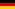
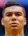
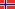
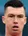

선수단 (SQUAD)
| 번호 |
사진 |
선수 |
출생 (나이) |
포지션 |
국적 |
| 1 |
 |
Keylor Navas (케일러 나바스) |
1986. 02. 15 (28) |
GK |
코스타리카 |
| 2 |
 |
Raphaël Varane (라파엘 바란) |
1992. 04. 25 (22) |
DF-CB |
 프랑스 프랑스 |
| 3 |
|
Pepe (페페) |
1983. 02. 26 (32) |
DF-CB |
 포르투갈 포르투갈 |
| 4 |
|
Sergio Ramos (세르히오 라모스) (C) |
1986. 03. 30 (29) |
DF-CB |
 스페인 스페인 |
| 6 |
 |
Nacho Fernández (나초 페르난데스) |
1990. 01. 18 (25) |
DF-CB |
스페인 |
| 7 |
|
Cristiano Ronaldo (크리스티아누 호날두) |
1985. 02. 05 (30) |
FW-LW |
포르투갈 |
| 8 |
 |
Toni Kroos (토니 크로스) |
1990. 01. 04 (25) |
MF-CM |
 독일 |
| 9 |
 |
Karim Benzema (카림 벤제마) |
1987. 12. 19 (27) |
FW-ST |
프랑스 |
| 10 |
 |
James Rodríguez (하메스 로드리게스) |
1991. 07. 12 (23) |
MF-AM |
 콜롬비아 콜롬비아 |
| 11 |
 |
Gareth Bale (가레스 베일) |
1989. 07. 16 (25) |
FW-RW |
 웨일즈 웨일즈 |
| 12 |
 |
Marcelo (마르셀로) |
1988. 05. 12 (27) |
DF-LB |
 브라질 브라질 |
| 13 |
 |
Kiko Casilla (키코 카시야) |
1986. 10. 02 (28) |
GK |
스페인 |
| 14 |
 |
Casemiro (카세미루) |
1992. 02. 23 (23) |
MF-DM |
브라질 |
| 15 |
 |
Daniel Carvajal (다니 카르바할) |
1992. 01. 11 (23) |
DF-RB |
스페인 |
| 16 |
 |
Mateo Kovacic (마테오 코바치치) |
1994. 05. 06 (21) |
MF-CM |
 크로아티아 크로아티아 |
| 17 |
 |
Álvaro Arbeloa (알바로 아르벨로아) |
1983. 01. 17 (32) |
DF-RB |
스페인 |
| 18 |
 |
Lucas Vázquez (루카스 바스케스) |
1991. 07. 01 (24) |
MF-RM |
스페인 |
| 19 |
|
Luka Modrić (루카 모드리치) |
1985. 09. 09 (29) |
MF-CM |
크로아티아 |
| 20 |
 |
Jesé Rodriguez (헤세 로드리게스) |
1993. 02. 26 (22) |
FW-CF |
스페인 |
| 21 |
 |
Denis Cheryshev (데니스 체리셰프) |
1990. 12. 26 (24) |
FW-LW |
 러시아 러시아 |
| 22 |
 |
Isco (이스코) |
1992. 04. 21 (23) |
MF-AM |
스페인 |
| 23 |
 |
Danilo (다닐루) |
1991. 07. 15 (23) |
DF-RB |
브라질 |
| 27 |
 |
Martin Ødegaard (마틴 외데고르) |
1998. 12. 17 (16) |
MF-AM |
 노르웨이 |
| 28 |
 |
Marcos Llorente (마르코스 요렌테) |
1995. 01. 30 (20) |
MF-CM |
스페인 |
| 29 |
 |
Borja Mayoral (보르하 마요랄) |
1997. 04. 05 (17) |
FW-CF |
스페인 |
| 27 |
 |
Raúl de Tomás (라울 데 토마스) |
1994. 10. 17 (19) |
FW-CF |
스페인 |
| 28 |
|
Guillermo Varela (기예르모 바렐라) |
1993. 03. 24 (21) |
DF-RB |
 우루과이 우루과이 |
| 31 |
|
Rubén Yáñez (루벤 야네즈) |
1993. 10. 12 (21) |
GK |
스페인 |
| 32 |
 |
Philipp Lienhart (필립 라이언하트) |
1996. 07. 11 (18) |
DF-CB |
 오스트리아 오스트리아 |
| 33 |
|
José Carlos Lazo (호세 카를로스 라조) |
1996. 02. 16 (19) |
FW-LW |
스페인 |
| 34 |
|
Álvaro Tejero (알바로 타예호) |
1996. 07. 20 (18) |
DF-RB |
스페인 |
| 42 |
 |
Álex Craninx (알렉스 크라닉스) |
1995. 10. 21 (19) |
GK |
 벨기에 벨기에 |


 Home
Home